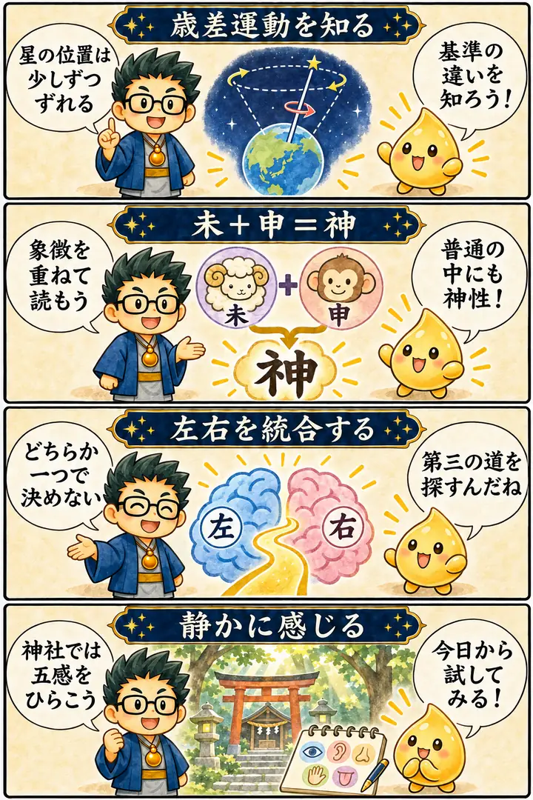

第4期 リアル講座・第3回
未＋申＝神・歳差運動・うぶすな神社
この回の要約
一つの正解へ急がず、異なる基準や左右の力を重ねて「第三の選択肢」を見つける。
当日の本編録画が残らなかったため、この回の動画は講師が作成した4分29秒の振り返り動画です。要約は当日の書き起こし・要約と組み合わせています。
天文学として確認できる歳差運動と、講義内の神話・漢字・時代解釈は分けて整理しました。
4コマ漫画でつかむ

タイムスタンプ
時間を押すと、上の動画がその場面から再生されます。
質疑応答
※ 講義の要約と書き起こしをもとに、学習用に整理・再構成しています。吹き出しは逐語引用ではありません。
同じ星空なのに、なぜ結果がずれる？
00:17から見る ▶西洋占星術とインド占星術で星座が違うことがあるのは、どちらかが間違っているからですか？
地球の自転軸が長い時間をかけて向きを変える歳差運動と、二つの占星術が採用する基準の違いが関係します。まず「別の物差しで測っている」と知ることが入口です。
持ち帰り：結果が違うときは、正誤を急ぐ前に計算方法と基準を確認する。
「未＋申＝神」は、講義の象徴として読む
01:04から見る ▶未と申を合わせると神になる、というのは漢字の成り立ちそのものですか？
ここでは講義内の象徴的な読み方です。未を一般の人々、申を修験や変化の力に重ね、「普通の人の中にも神性がある」と受け取ります。字源の説明とは分けましょう。
持ち帰り：象徴の面白さを使いながら、歴史的事実と講師の解釈を混同しない。
左右がぶつかると、第三の道が見える
01:27から見る ▶直感を信じるか、理屈で考えるか、どちらが正解ですか？
どちらかを弱めるのではなく、両方を使います。直感で候補を出し、理屈で確かめ、本人の実感を聞く。二つを重ねると、最初にはなかった道が見つかります。
持ち帰り：占いの結果・現実の情報・本人の感覚を三つ並べて考える。
神社では、答えを取りに行く前に静かになる
01:45から見る ▶神社へ行ったら、何をお願いすればよいですか？
まず音、風、光、足裏の感覚に意識を戻します。お願いを増やすより、手を合わせ、感謝し、自分の内側がどう動くかを静かに見ます。
持ち帰り：参拝を、未来を断定する方法ではなく、自分を整える時間として試す。
個別の神社鑑定は、本人の選択を奪わない
02:18から見る ▶自分に合う神社を教えてもらったら、必ず行くべきですか？
鑑定は候補を見つける補助線です。距離、体調、安全、本人が感じる親しさを確認し、無理なく選びます。参加者の私的な鑑定内容は一般化しています。
持ち帰り：提案は命令にせず、本人が安全に選べる言葉へ直す。
覚えておきたいこと
- 歳差運動は天文学上の現象。占星術での意味づけは各体系の解釈として扱う。
- 神話・漢字・十二支の結びつきは、字源や史実と講義上の象徴を分けて読む。
- 直感か論理かの二択にせず、両方を使って第三の選択肢を探す。
- 参拝や鑑定は、本人の安全・実感・自由な選択を尊重する。
復習ポイント
講義内の占術上の説明・時代の読み・象徴的な解釈は、講師の見立てです。客観的な事実や将来を保証するものではありません。